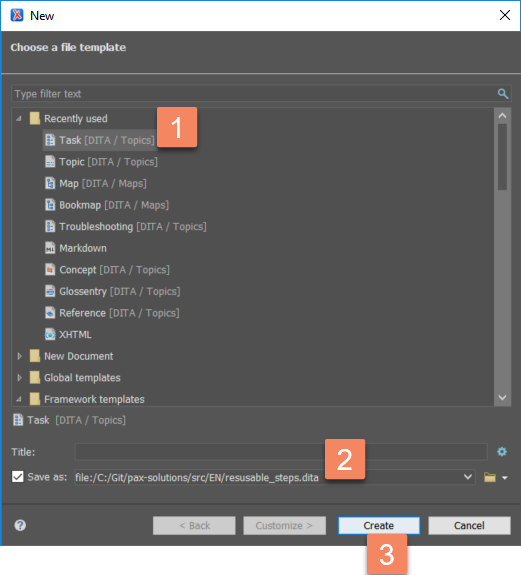
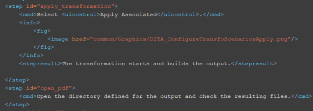

To be able to reuse steps, you should first create a "bank" of steps that can be reused throughout the documentation.
You will then refer to these steps and the maintenance of your content will be easier.
In oXygen, select File>New.
The New window appears.
In the New window, select the Task type, select a location at the root of the documentation repository, and select Create.

The task file opens in the editor.
Add a title and populate the topic with the steps that can be reused. Create an ID for each step like in the following example:

Once the steps are isolated in the task file, you need to refer to the task file in the ditamaps that will use these steps to be able to refer to them from other topics. See Insert reusable content into topics.